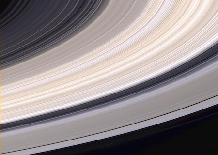
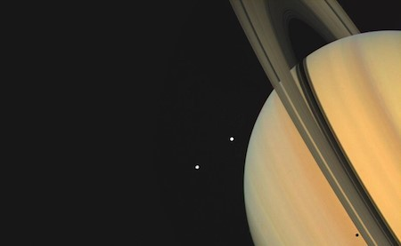

SATÜRN
Satürn halkaları olan tek gezegen değildir fakat kesinlikle en güzelidir. Gördüğümüz halkası bir
grup küçük halkaların birleşmesinden oluşur. Bu, halkalar buz ve kaya parçalarından meydana
gelir. Jüpiter gibi Satürn’de çoğunlukla hidrojen ve helyumdan oluşur
Galileo Galilei 1600’lerde teleskopu ile Satürn’ü gördüğünde neye baktığına emin olamadı. İlk
başta üç tane gezegene veya kulakları olan bir gezegene baktığını düşündü. Fakat şimdi o
kulakların Satürn’ün halkaları olduğunu biliyoruz.

Satürn tıpkı Jüpiter gibi bir gaz devidir ve çoğunlukla hidrojen ve helyumdan oluşur. Yoğun bir
atmosferi vardır.Satürn halkaları ile meşhurdur. Bu gezegen aralarında boşluklar olan 7 tane
halkaya sahiptir.Satürn’de 1 gün, 10.7 saat sürer. 1 Satürn yılı, 29 Dünya yılına eşittir.
Satürn’ün 53 tane uydusu vardır. 29 tane de hakkında daha fazla bilgiye ihtiyacımızın olduğu
uydusu vardır.
Satürn teleskop olmadan da görülebildiği için antik zamanlardan beri bilinir. Gelişen teknoloji ile
birlikte zaman içinde 4 robotik uzay aracı Satürn’ü ziyaret etmiştir. Bunlar; Pioneer 11, Cassini,
Voyager 1 ve 2 uzay araçlarıdır.

Voyager 1’in Satürn yakınlarından geçerken çektiği fotoğraf. Satürn’ün uyduları Tthys ve Diona’da görülebiliyor.(Kaynak:NASA)
Kaynak: NASA